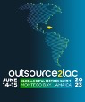

Overview
Jamaica hosted a high-level IDB–ALF investment forum under the Outsource2LAC banner, designed to position the country as a regional hub for global digital services and knowledge-based industries. Co-developed with the IDB and in coordination with JAMPRO, the summit convened investors, buyers, policy makers, SMEs and service providers.
Strategic Positioning
The forum framed Jamaica’s value proposition around digital transformation and services export capacity, aligning with the IDB’s Outsource2LAC strategy to unlock global digital services potential across Latin America and the Caribbean.
Program Architecture
- Plenaries and sector panels spotlighting Jamaica’s policy priorities and market opportunities.
- B2B matchmaking generated through IDB matching software to align interests.
- Market scoping and U.S. company recruitment led by ALF with IDB and JAMPRO.
- End-to-end participation support, on-site guidance and structured follow-up.
Targeted Sectors
- Emerging technologies: AI/ML, cloud, blockchain, IoT, AR/MR/VR and data analytics.
- BPO: automation, fintech, customer operations, logistics, ERP, HR and marketing.
- ITO: SaaS, apps, e-commerce, cloud, web management and cybersecurity.
- KPO and creative services: animation, video games, telemedicine, edtech, ag-tech, biotech and R&D.
Outcomes & Legacy
A curated U.S. company cohort engaged with Jamaica’s digital services ecosystem through targeted B2B meetings and structured agendas. Institutional bridges were reinforced among the Government of Jamaica, JAMPRO, IDB and international business councils, improving future market access and investor confidence.
Jamaica — Outsource2LAC Global Digital Services Summit in Pictures
A visual record of institutional presentations, investment forums, B2B meetings and networking moments connected to this mission.
